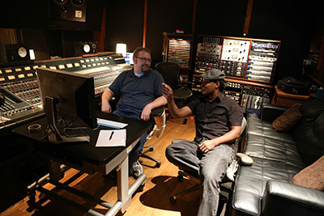

Take your tracks to the next level. Mantz Music now offers online mixing! Professional mixes at reasonable rates. Your satisfaction is guartanteed. If your mix does not meet your expectations, you will not have to pay for it.
Mantz Music also provides on-location recording services and freelance audio engineering throughout the Southern California region.
Current Projects
Anthony Mantz is currently engineering an album project with vocalist Andrea Miller, produced by Julian Morgan and David Cochrane. So far, sessions have taken place at Ocean Way Studio's Studio D and East West Studio's Studio 2 in Hollywood. The sessions have been phenomenal both in the quality of Andrea's vocal talent and the quality of the tools available for the recording. Keep a lookout for Andrea in the very near future.
Recent Projects
July 2013- Telefunken Mixing Competition - Rusted Root
July 1, 2013 - Sounds of Cypress Orchestra
Tracked a few selections for consideration for the orchestra's website and other advertising media
May 19, 2013 - King Karl King Honor Band
Congratulations to all the 7th, 8th, and 9th graders who performed with the Tribute to King Karl King Honor Band at RCC. This group played with a mature sound and good balance. Also, the RCC Wind Ensemble completed a ... read more...
© Anthony Mantz 2013 909-261-0416